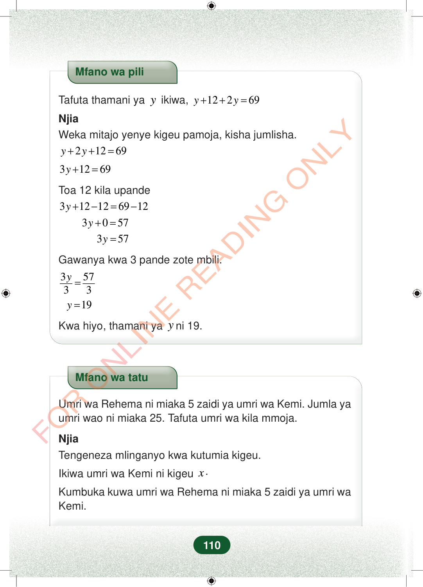

Mfano wa piliTafuta thamani yayikiwa,12269yy++=NjiaWeka mitajo yenye kigeu pamoja, kisha jumlisha.21269yy++=31269y+=Toa 12 kila upande312126912y+−=−3057y+=357y=Gawanya kwa 3 pande zote mbili.35733y=19y=Kwa hiyo, thamani yayni 19.Mfano wa tatuUmri wa Rehema ni miaka 5 zaidi ya umri wa Kemi. Jumla yaumri wao ni miaka 25. Tafuta umri wa kila mmoja.NjiaTengeneza mlinganyo kwa kutumia kigeu.Ikiwa umri wa Kemi ni kigeux.Kumbuka kuwa umri wa Rehema ni miaka 5 zaidi ya umri waKemi.110
Mfano wa pili
Tafuta thamani ya y ikiwa, 12 2 69 y y + + =
Njia Weka mitajo yenye kigeu pamoja, kisha jumlisha.
2 12 69 y y + + =
3 12 69 y + =
Toa 12 kila upande
3 12 12 69 12 y + − = −
3 0 57 y + =
3 57 y =
Gawanya kwa 3 pande zote mbili.
3 57 3 3 y =
19 y =
Kwa hiyo, thamani ya y ni 19.
Mfano wa tatu
Umri wa Rehema ni miaka 5 zaidi ya umri wa Kemi. Jumla ya umri wao ni miaka 25. Tafuta umri wa kila mmoja.
Njia Tengeneza mlinganyo kwa kutumia kigeu.
Ikiwa umri wa Kemi ni kigeu x .
Kumbuka kuwa umri wa Rehema ni miaka 5 zaidi ya umri wa Kemi.
110
Mfano wa piliTafuta thamani ya y ikiwa, <math><mrow><mi>y</mi><mo>+</mo><mn>12</mn><mo>+</mo><mn>2</mn><mi>y</mi><mo>=</mo><mn>69</mn></mrow></math>NjiaWeka mitajo yenye kigeu pamoja, kisha jumlisha.y + 2y + 12 = 693y + 12 = 69Toa 12 kila upande3y + 12 - 12 = 69 - 123y + 0 = 573y = 57Gawanya kwa 3 pande zote mbili.<math><mrow><mfrac><mrow><mn>3</mn><mi>y</mi></mrow><mn>3</mn></mfrac><mo>=</mo><mfrac><mn>57</mn><mn>3</mn></mfrac></mrow></math>y = 19Kwa hiyo, thamani ya y ni 19.Mfano wa tatuUmri wa Rehema ni miaka 5 zaidi ya umri wa Kemi.Jumla ya umri wao ni miaka 25.Tafuta umri wa kila mmoja.NjiaTengeneza mlinganyo kwa kutumia kigeu.Ikiwa umri wa Kemi ni kigeu <math><mi>x</mi></math>.Kumbuka kuwa umri wa Rehema ni miaka 5 zaidi ya umri wa Kemi.